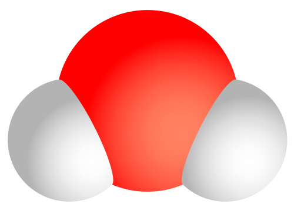

Números Reales y Notación Científica¶
Guía de estudio — Nivel bachillerato
1. Símbolos de Agrupación¶
Cuando escribimos expresiones matemáticas, necesitamos indicar qué operaciones se hacen primero. Para eso usamos símbolos de agrupación, que son como "señales de tráfico" que le dicen al lector: "¡Ojo! Esto va junto."
Los tres principales¶
| Símbolo | Nombre | Ejemplo |
|---|---|---|
( ) |
Paréntesis | \(3 \times (2 + 5)\) |
[ ] |
Corchetes | \(2 \times [3 + (4 - 1)]\) |
{ } |
Llaves | \(\{2 + [3 \times (1 + 1)]\} - 5\) |
¿Por qué necesitamos varios?¶
Imagina que una expresión tiene varios niveles de agrupación. Si solo usáramos paréntesis, sería un lío:
Es difícil saber qué paréntesis se cierra con cuál. En cambio, si usamos distintos símbolos, queda clarísimo:
Regla general: Se resuelven de adentro hacia afuera:
1. Primero los paréntesis ( )
2. Luego los corchetes [ ]
3. Finalmente las llaves { }
Ejemplo resuelto¶
Paso 1: Paréntesis → \(2 + 1 = 3\) $\(\{5 + [3 \times 3]\} - 4\)$
Paso 2: Corchetes → \(3 \times 3 = 9\) $\(\{5 + 9\} - 4\)$
Paso 3: Llaves → \(5 + 9 = 14\) $\(14 - 4 = \boxed{10}\)$
💡 Dato curioso: La barra de fracción \(\frac{a}{b}\) también funciona como símbolo de agrupación. El numerador y el denominador se tratan como si estuvieran entre paréntesis.
2. Distancia en los Números Reales¶
Ya conoces el valor absoluto de un número: \(|x|\) es la distancia de \(x\) al cero en la recta numérica. Ahora vamos un paso más allá: ¿cuál es la distancia entre dos números cualesquiera?
Definición¶
La distancia entre dos números reales \(a\) y \(b\) es:
¡Así de simple! Solo calculamos el valor absoluto de la diferencia.
¿Por qué funciona esto?¶
Piensa en la recta numérica:
---|---|---|---|---|---|---|---|---|--->
-3 -2 -1 0 1 2 3 4 5
<------->
distancia de -1 a 3 = |(-1) - 3| = |-4| = 4
Da igual en qué orden restes: \(|3 - (-1)| = |4| = 4\) también funciona.
Ejemplos¶
| \(a\) | \(b\) | \(d(a,b) = |a-b|\) | Verificación rápida | |------|------|------------|------------------------------| | \(3\) | \(7\) | \(|3-7| = |-4| = 4\) | Contando: 4 → ✅ | | \(-2\) | \(5\) | \(|-2-5| = |-7| = 7\) | Contando: 7 → ✅ | | \(-3\) | \(-8\) | \(|-3-(-8)| = |5| = 5\) | Contando: 5 → ✅ | | \(0\) | \(0\) | \(|0-0| = 0\) | Estás en el mismo punto → ✅ |
Aplicación: Desigualdades con distancia¶
Si te dicen "los puntos que están a distancia menor que 3 del 5", esto se escribe:
Esto significa: \(\;x\) está entre \(5-3\) y \(5+3\), es decir:
En la recta:
---|----|----|----|----|----|----|--->
2 3 4 5 6 7 8
<------------------->
(todos los puntos a distancia < 3 del 5)
3. Notación Científica¶
El problema: números muy grandes y muy pequeños¶
Mira estos dos números:
- La distancia a la galaxia NGC 4414 (en la foto): aproximadamente \(60{,}000{,}000{,}000{,}000{,}000{,}000{,}000\) metros
- El diámetro de una molécula de agua: aproximadamente \(0.0000000003\) metros
¡Son horribles de leer! Los ceros dan dolor de cabeza y es fácil perderse countándolos.
La solución¶
La notación científica es una forma de escribir cualquier número como:
donde: - \(a\) es un número mayor o igual a 1 y menor que 10 (llamado coeficiente) - \(n\) es un número entero (positivo o negativo), llamado exponente
¿Cómo convertimos un número?¶
Paso 1: Mueve el punto decimal hasta que quede solo un dígito antes del punto.
Paso 2: Cuenta cuántos lugares moviste el punto: - Si lo moviste hacia la izquierda → el exponente es positivo - Si lo moviste hacia la derecha → el exponente es negativo
Ejemplo con un número GRANDE¶
El radio de la Vía Láctea: ~700,000,000,000,000,000,000,000 m
Movemos el punto 23 lugares a la izquierda:
Ejemplo con un número PEQUEÑO¶
El diámetro de un átomo de oxígeno: ~0.000000000148 m
Movemos el punto 10 lugares a la derecha:
Ilustrando la utilidad¶
Números GRANDES: una galaxia 🌀¶
La galaxia NGC 4414, fotografiada por el telescopio Hubble:

Galaxia NGC 4414 — Foto: NASA/ESA Hubble Space Telescope
- Distancia desde la Tierra: ~60 sextillones de metros → \(6 \times 10^{25}\) m
- Sin notación científica: 60,000,000,000,000,000,000,000,000 m — ¡intenta leer eso en voz alta!
Números PEQUEÑOS: una molécula de agua 💧¶
La molécula H₂O — dos átomos de hidrógeno unidos a uno de oxígeno:

Estructura de la molécula de agua (H₂O) — Dominio público
- Diámetro aproximado: ~0.0000000003 m → \(3 \times 10^{-10}\) m
- Sin notación científica: 0.0000000003 m — fácil perderse con los decimales
Tabla de referencia rápida¶
| En Decimal | En Notación Científica | Tamaño relativo |
|---|---|---|
| \(1{,}000{,}000{,}000\) | \(1 \times 10^{9}\) | Mil millones |
| \(0.000001\) | \(1 \times 10^{-6}\) | Millionésimo |
| \(5{,}200{,}000{,}000\) | \(5.2 \times 10^{9}\) | Población mundial aprox. |
| \(1{,}380{,}000{,}000{,}000{,}000{,}000{,}000{,}000{,}000\) | \(1.38 \times 10^{27}\) | Masa de la Tierra (kg) |
4. Operaciones con Números en Notación Científica¶
Antes de empezar: recuerda las propiedades de los exponentes: - \(10^a \times 10^b = 10^{a+b}\) - \(\frac{10^a}{10^b} = 10^{a-b}\) - \((10^a)^n = 10^{a \times n}\)
4.1 Suma y Resta 🔢➕🔢¶
Regla de oro: Solo se pueden sumar o restar directamente si tienen el mismo exponente. Si no, hay que convertir primero.
Caso 1: Mismo exponente ✅¶
Fíjate: es como sumar peras con peras — el exponente \(10^5\) es la "unidad".
Caso 2: Distinto exponente → hay que igualar¶
Convertimos el segundo al mismo exponente:
Ahora sí:
Truco rápido: escribir todo completo y luego convertir¶
Sumamos: \(3{,}000{,}000 + 50{,}000 = 3{,}050{,}000\)
Luego convertimos de vuelta: \(3.05 \times 10^{6}\) ✅
4.2 Multiplicación 🔢✖️🔢¶
Regla: se multiplican los coeficientes y se suman los exponentes.
Ejemplo¶
4.3 División 🔢➗🔢¶
Regla: se dividen los coeficientes y se restan los exponentes (exponente de arriba menos el de abajo).
Ejemplo¶
4.4 Potencia de una expresión en notación científica¶
Ejemplo¶
Resumen rápido de operaciones¶
| Operación | Regla | Ejemplo |
|---|---|---|
| Suma/Resta (mismo exp.) | \((a \pm b) \times 10^{n}\) | \((3 + 2) \times 10^{4} = 5 \times 10^{4}\) |
| Suma/Resta (distinto exp.) | Igualar exponentes primero | Convertir al mayor exponente |
| Multiplicación | \((a \times b) \times 10^{m+n}\) | \((3 \times 2) \times 10^{4+2} = 6 \times 10^{6}\) |
| División | \(\left(\frac{a}{b}\right) \times 10^{m-n}\) | \(\frac{6}{2} \times 10^{6-3} = 3 \times 10^{3}\) |
| Potencia | \(a^{n} \times 10^{m \times n}\) | \(3^{2} \times 10^{2\times 4} = 9 \times 10^{8}\) |
Ejercicios para practicar¶
-
Símbolos de agrupación: Calcula: \(\{8 - [2 \times (3 + 1)]\} + 5\)
-
Distancia: ¿Cuál es la distancia entre \(-7\) y \(3\)? ¿Y entre \(2.5\) y \(-4.5\)?
-
Notación científica: Convierte a notación científica:
- \(0.00000000016\)
-
\(48{,}000{,}000{,}000\)
-
Operaciones: Resuelve y expresa el resultado en notación científica:
- \((3 \times 10^{6}) + (5 \times 10^{5})\)
- \((7 \times 10^{8}) \times (2 \times 10^{3})\)
- \(\frac{8 \times 10^{10}}{4 \times 10^{6}}\)
Imágenes: Galaxia NGC 4414 (NASA/ESA Hubble, dominio público) | Diagrama molécula H₂O (Sakurambo, dominio público)